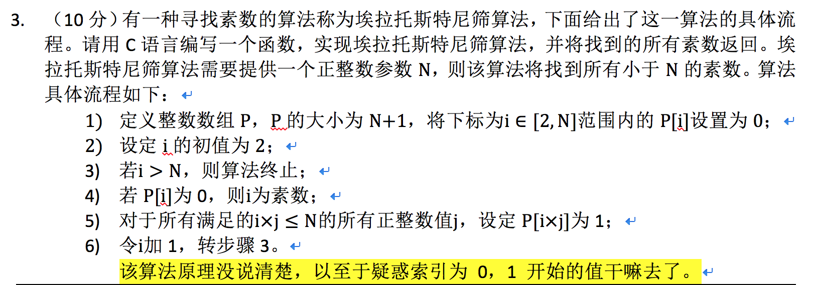
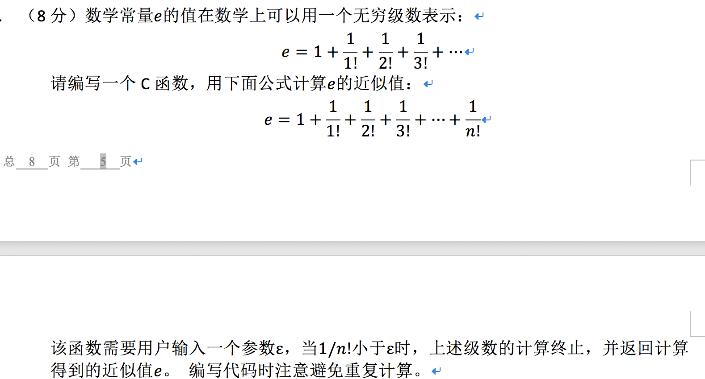
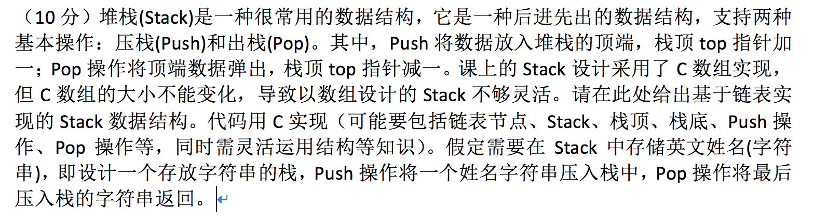
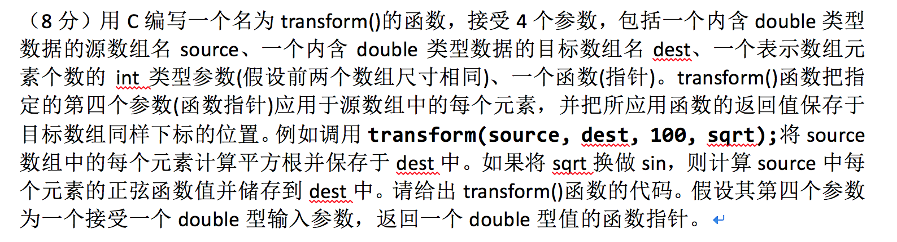
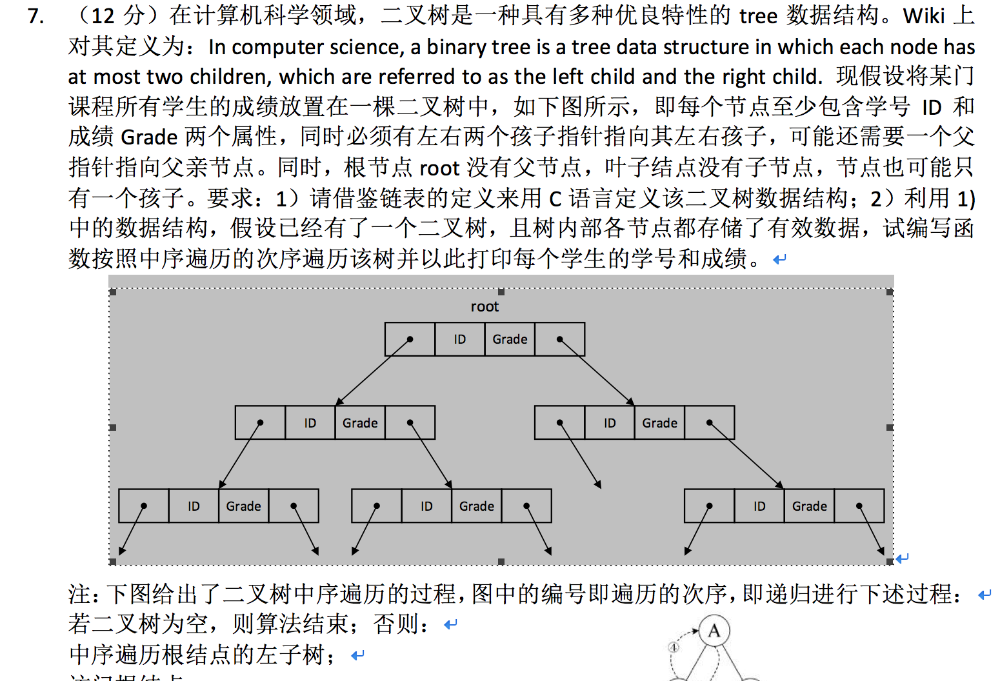
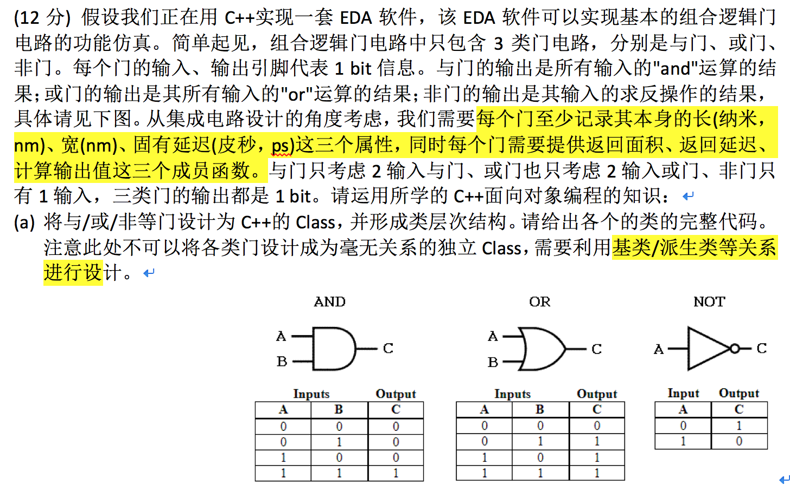
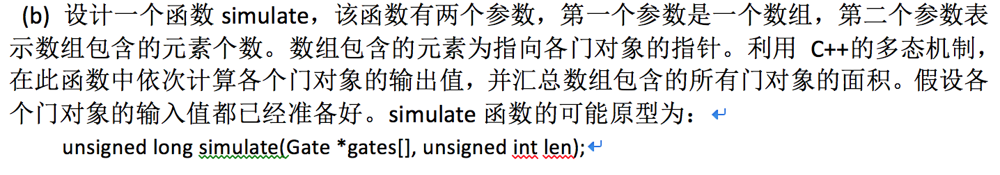

☰ 目录
20180529C 语言试卷相关题目
返回Long型数的最大数
1. （10分）用C编写一个函数，该函数的参数为一个长整数，返回值亦为长整数。该函数要求的功能为：将输入参数的各个数位拆出，然后重新排列组合为一个更大的长整数并返回该长整数。例如输入参数2314，拆出2、3、1、4，然后重新组合为最大的4321返回。编写该函数时无需考虑是否超出长整数的表示范围；只需考虑十进制形式。
//#include <iostream>
#include <stdio.h>
#include <strings.h>
#include <stdlib.h>
int a[100] = {-1};
int cmp(const void *a,const void *b)
{
return(*(int *)b-*(int *)a); //实现的是降序排序
}
long moreBigger(long in){
int index = 0;
do{
a[index] = in %10;
index++;
}while(in /= 10);
qsort(a,100,sizeof(a[0]),cmp); /// <stdlib.h>
long res = 0;
for(int j =0; j < index; j++){
res = res*10 + a[j];
}
return res;
}
int main() {
printf("%d",moreBigger(15374));
return 0;
}
区分回文
（10分）用C编写一个函数，用于进行回文(Palindrome，即从左往右和从右往左看是相同的句子)测试。该函数的输入为一条消息，输出是表示该消息是否为回文的标志。为简单起见，只考虑英文消息，而且忽略掉消息中所有不是字母的字符。运行时场景如下：
Enter a message: He lived as a devil, eh?
Palindrome
Enter a message: Madam, I am Adam
Not a palindrome
没有考虑是否忽略大小写，答案是区分大小写的
//#include <iostream>
#include <stdio.h>
#include <strings.h>
#include <stdlib.h>
#include <string.h>
bool Judge(){
char str[100];
printf("Enter a message:");
// gets(str); /// 不能用 scanf
fgets(str, (sizeof str / sizeof str[0]), stdin);
char * p = strrchr(str, '\0');
printf("%d",p - str);
char newStr[100];
int p_newStr = 0;
for(int i=0; i < p - str; i++){
if( (str[i] >='a' && str[i] <= 'z' || str[i] >= 'A' && str[i] <= 'Z' )){
newStr[p_newStr] = str[i];
p_newStr++;
}
}
newStr[p_newStr] = '\0';
printf("%s", newStr);
char * pp = strrchr(newStr, '\0');
char * end = pp-1;
char * begin = newStr;
bool flag = true;
while (begin < end){
if( *begin != *end ){
flag = false;
break;
}else{
begin++;
end--;
}
}
return flag;
}
int main() {
printf("%d", Judge() );
return 0;
}
//He lived as a devil, eh?
找一个数里面的所有素数

//#include <iostream>
#include <stdio.h>
#include <strings.h>
#include <stdlib.h>
#include <string.h>
int main() {
int *array;
int N;
printf("请输入所要创建的一维动态数组的长度：");
scanf("%d",&N);
array=(int*)calloc(N+1,sizeof(int));
for(int i=2; i <=N; i++){
array[i] = 0;
}
for(int i=2; i<=N; i++){
if(!array[i]){
for(int j = i; i*j <=N; j++)
array[i*j] = 1;
}
}
int j=0;
for(int i=2;i<=N;i++)
{
if(!array[i])
{
printf("%d ",i);
j++;
if(j%10 == 0)
printf("\n");
}
}
printf("\n");
free(array);
return 0;
}
//He lived as a devil, eh?
计算级数

//#include <iostream>
#include <stdio.h>
#include <strings.h>
#include <stdlib.h>
#include <string.h>
int main() {
double precise;
scanf("%lf", &precise);
double res = 0;
int index = 1;
long long prod = 1;
if(precise > 0){
while(1){
prod = prod * index;
double current = 1.0 / prod;
if( current < precise ){
break;
}
res = res + current;
index++;
}
res = res + 1;
printf("%lf", res);
}else{
printf("Precision must be positive float");
}
return 0;
}
用单链表实现栈

#include <stdio.h>
#include <stdlib.h>
typedef struct NODE
{
int val;
struct NODE *next;
}node;//define node
node * head=NULL;//init head_node of stack
int length_stack(node *link); /// 函数声明
//create node
node *create_node(int val)
{
node *p=(node *)malloc(sizeof(node));
p->val=val;
p->next=NULL;
return p;
}
//push 头插法
node *push(int val)
{
node *p=create_node(val);
p->next=head;
head=p;
return head;
}
//peek
int peek(node *link)
{
if(length_stack(link)==0)
{
printf("此栈为空");
return 0;
}
return head->val;
}
//calculate length_length
int length_stack(node *link)
{
int count=0;
while(link)
{
count++;
link=link->next;
}
return count;
}
//pop
int pop(node *link)
{
node *p;
p=head;
head=head->next;
free(p);
return p->val;
}
//printf_stack
void print_stack()
{
while(head)
{
printf("%d ",head->val);
head=head->next;
}
}
int main()
{
push(1);
push(2);
push(3);
push(4);
push(5);
peek(head);
int size=length_stack(head);
printf("栈长度为：%d\n",size);
print_stack();
}
存储为字符串的实现
#include <stdio.h>
#include <stdlib.h>
typedef struct NODE
{
char* val;
struct NODE *next;
}node;//define node
node * head=NULL;//init head_node of stack
int length_stack(node *link);
//create node
node *create_node(char* val)
{
node *p=(node *)malloc(sizeof(node));
p->val=val;
p->next=NULL;
return p;
}
//push 头插法
node *push(char* val)
{
node *p=create_node(val);
p->next=head;
head=p;
return head;
}
//peek
char* peek(node *link)
{
if(length_stack(link)==0)
{
printf("此栈为空");
return 0;
}
return head->val;
}
//calculate length_length
int length_stack(node *link)
{
int count=0;
while(link)
{
count++;
link=link->next;
}
return count;
}
//pop
char* pop(node *link)
{
node *p;
p=head;
head=head->next;
free(p);
return p->val;
}
//printf_stack
void print_stack()
{
while(head)
{
printf("%s ",head->val);
head=head->next;
}
}
int main()
{
push("Jim");
push("god");
push("hello");
push("world");
push("me");
peek(head);
int size=length_stack(head);
printf("栈长度为：%d\n",size);
print_stack();
}
函数指针作为参数

#include <stdio.h>
#include <algorithm>
#include <vector>
#include <iostream>
// or
//typedef void(*FunType)(int);
void transform(double* source, double* dest, size_t n, double (*func)(double) ){
for( int i=0; i< n; i++ ){
dest[i] = func(source[i]);
}
}
double sqrt(double x)
{
return x*x;
}
int main(){
double source[2] = {1,2};
double dest[2];
transform(source,dest,2,sqrt);
for(int i=0; i < 2; i++){
printf("%lf", dest[i]);
}
return 0;
}
二叉树的中序遍历

#include <stdio.h>
#include <algorithm>
#include <vector>
#include <iostream>
typedef int datatype;
typedef struct node{
datatype id;
datatype grade;
node* lchild = nullptr;
node* rchild = nullptr;
node* parent = nullptr;
node(datatype id, datatype grade,node* lchild, node* rchild, node* parent):
id(id),grade(grade),lchild(lchild),rchild(rchild),parent(parent){}
node(datatype id, datatype grade): id(id),grade(grade){}
}Node;
void inorder(Node* in){
if(in == nullptr)
return;
inorder(in->lchild);
printf("id: %d \t grade: %d \n", in->id, in -> grade);
inorder(in->rchild);
}
int main(){
Node* top =new Node(0,1);
Node* l = new Node(1,2);
Node* r = new Node(2,3);
top->lchild = l;
top->rchild = r;
inorder(top);
return 0;
}
虚函数和虚继承


class BaseGate{
public:
BaseGate(){}
BaseGate(double length, double width, double delay):length(length),width(width),delay(delay){}
protected:
double length;
double width;
double delay;
public:
virtual double getArea() =0;
virtual double getDelay() = 0;
virtual bool output() = 0;
};
class And: public BaseGate{
private:
bool in1,in2;
public:
Add(double length, double width, double delay, bool in1, bool in2):
BaseGate(length,width,delay), in1(in1), in2(in2){}
double getArea(){
return length * width;
}
double getDelay(){
return delay;
}
bool output(){
return in1 & in2;
}
/// 实现一个静态重载版本
static bool output(bool in1, bool in2){
return in1 & in2;
}
};
class Or: public BaseGate{
private:
bool in1,in2;
public:
Or(double length, double width, double delay, bool in1, bool in2):
BaseGate(length,width,delay), in1(in1), in2(in2){}
double getArea(){
return length * width;
}
double getDelay(){
return delay;
}
bool output(){
return in1 | in2;
}
/// 实现一个静态重载版本
static bool output(bool in1, bool in2){
return in1 | in2;
}
};
class Not: public BaseGate{
private:
bool in1;
public:
Not(double length, double width, double delay, bool in1, bool in2):
BaseGate(length,width,delay), in1(in1){}
double getArea(){
return length * width;
}
double getDelay(){
return delay;
}
bool output(){
return ~in1;
}
/// 实现一个静态重载版本
static bool output(bool in1){
return ~in1;
}
};
unsigned long simulate(BaseGate *gates[], unsigned int len){
unsigned long res = 0;
for(int i = 0; i < len ; i ++){
gates[i] -> output();
res += gates[i] -> getArea();
}
return res;
}